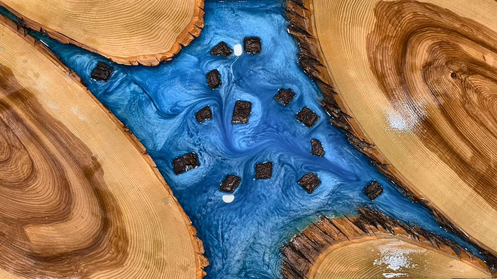

Five scroll effects below, each with its own sound. Sound is off by default. Tap the button at top right to turn it on, then scroll. You can also test each sound here first.
On a phone, make sure silent mode is off.
Blue river table

Before the pour

Kitchen

In the shop
Resin river wall